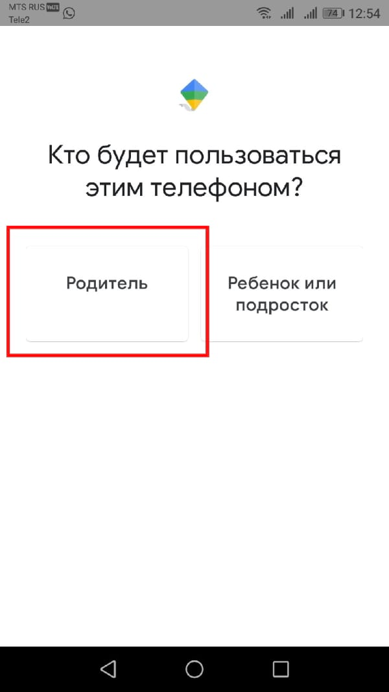

Родительский контроль на android
Как настроить Google Family Link
Настройка Family Link немного утомительна, но не требует особых усилий. Прежде чем начать, убедитесь, что выполнены следующие предварительные условия. В противном случае инструкции не сработают.
Вашему ребенку нужна собственная учетная запись Google. Вам нужно создать ее, чтобы использовать Family Link.
Учетная запись Google Вашего ребенка должна быть частью Вашей семейной сети. Если Вы не сделаете это заранее, Family Link заставит Вас сделать это во время настройки, но Вам будет проще сделать это заранее.
Наконец, учетная запись Google Вашего ребенка должна быть единственной на устройстве ребенка. Family Link принудительно удалит все остальные учетные записи Google во время настройки.
Хорошо, теперь, когда все настроено и готово, давайте начнем. Поскольку для этого требуется ввод на двух разных устройствах, мы укажем, какое устройство требуется для каждого шага. Если написано «Родительское устройство», Вы делаете это на своем телефоне, а если «Дочернее устройство», то на телефоне ребенка.
Оба устройства — загрузите приложение «Google Family Link (для родителей)» на родительском устройстве и приложение «Google Family Link (для детей)» на дочернем устройстве. Обратите внимание, это два разных приложения.
На родительском устройстве откройте приложение «Google Family Link» и пролистайте начальные заставки, после этого нажмите «Начать».
Выберите Вашу учетную запись Google, если будет предложено.
На родительском устройстве укажите, что этим телефоном будет пользоваться родитель. И нажмите далее.
На родительском устройстве станьте администратором семейной группы, если будет предложено. Для этого нажмите «Начать».
Если у ребенка уже есть аккаунт Google нажмите «Да», иначе нажмите «Нет» и следуйте инструкциям.
Возьмите устройство Вашего ребенка и нажмите «Далее».
На устройстве ребенка установите Google Family Link (для детей), запустите его и выберите «Это устройство».
На устройстве ребенка выберите учетную запись, которой нужно управлять.
На устройстве ребенка введите код, указанный на родительском устройстве.
На устройстве ребенка введите пароль от его учетной записи.
На устройстве ребенка согласитесь с присоединением к семейной группе.
На устройстве родителя подтвердите управление аккаунтом ребенка.
На устройстве ребенка ознакомьтесь с представленной информацией и нажмите «Далее».
На устройстве ребенка нажмите «Разрешить».
На устройстве ребенка нажмите «Активировать приложение администратора устройства».
Теперь необходимо дать наименование устройству ребенка. На дочернем устройстве нажмите «Далее».
На дочернем устройстве введите название и нажмите «Далее».
На дочернем устройстве укажите приложения, которыми ребенок может пользоваться и нажмите «Далее».
Теперь Вы можете управлять устройством ребенка. Нажмите «Далее», а потом «Готово» на дочернем устройстве.
Устройство ребенка настроено и теперь Вы можете продолжить настройку Family Link на родительском устройстве.
Настройка Google Family Link
Теперь, когда Вы справились с трудной задачей подключения Family Link, давайте попробуем использовать ее в полной мере. С этого момента все происходит на родительском устройстве, если не указано иное. Есть много вещей, которые Вы можете сделать, поэтому Вы рассмотрим каждую из них в отдельности.
Местоположение устройства ребенка
В приложении Family Link есть специальная карточка для поиска телефона ребенка. Просто нажмите «Настроить», а затем «Включить», и Вам будет показана карта, где находится телефон.
С помощью этой функции Вы можете легко найти телефон Вашего ребенка. Это работает также как «Найти мой телефон», если Ваш ребенок где-нибудь оставит свой телефон.
Есть еще одна карточка, которую мы подробно обсудим ниже, но одной из ее функций является возможность воспроизводить звук с детского телефона в случае его потери. Это также помогает найти потерянный телефон.
Родительский контроль
Есть карточка с названием «Настройки». Она позволяет Вам получить доступ к базовому родительскому контролю. Нажмите «Открыть», чтобы получить доступ ко всем Вашим параметрам. Отсюда Вы можете ограничить контент, который Ваш ребенок видит в Google Play, и управлять фильтрами в Google Chrome, YouTube, поиске Google и местоположении.
Кроме того, Вы можете нажать на раздел приложений Android, чтобы установить временные ограничения для существующих приложений на телефоне ребенка или напрямую ограничить доступ к приложениям. Когда доступ к приложению ограничен, значок буквально исчезает с главного экрана и панели приложений, что делает его недоступным.

Наконец, этот раздел содержит очень важный параметр. Будет появляться запрос на разрешение родителей, прежде чем ребенок войдет в приложения или игры, которые родитель не сможет контролировать. Это включено по умолчанию и не может быть отключено.
После первого доступа к этой карточке она сжимается до гораздо меньшего размера, если Вам понадобится найти ее позже. Она всегда должно быть наверху.
Отслеживайте активность Вашего ребенка
Третья карточка в списке показывает фактическую активность Вашего ребенка. Вы можете увидеть приложения, которые он использует и как долго. На этой карточке есть ярлык для экрана ограничений приложений.
Существует отдельная карточка, которая показывает, какие приложения и игры установлены на устройстве Вашим ребенком. Таким образом, Вы можете отслеживать, что он загружает и что он делает.
Ограничить время работы
Дети, вероятно, не должны быть в телефоне весь день. Есть целый раздел для ограничения времени экрана. Первая вкладка, «Ограничения», позволяет Вам устанавливать ежедневные ограничения времени работы телефона. Например, Вы можете установить на три часа в школьные дни и шесть часов в выходные.
Вторая вкладка, «Время сна», позволяет Вам жестко ограничить время, в которое Ваш ребенок может пользоваться телефоном. После того, как Вы настроите это и выберете подходящее время, их телефон заблокируется, и они не смогут получить к нему доступ до утра. Это отличный инструмент для укладывания детей спать.
Настройки телефона
Последняя карточка делает две вещи. Он воспроизводит звук, который мы упоминали ранее в разделе местоположения выше, а также позволяет редактировать настройки дочернего устройства. Вы можете установить ограничения на такие вещи, как добавление пользователей, доступ к параметрам разработчика и возможность загружать приложения из неизвестных источников. Все они отключены по умолчанию, и Вы можете включить их, если хотите.